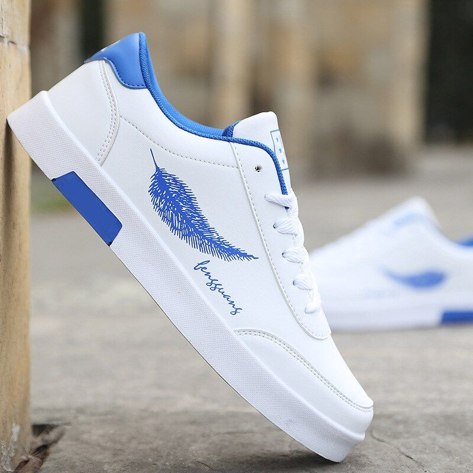
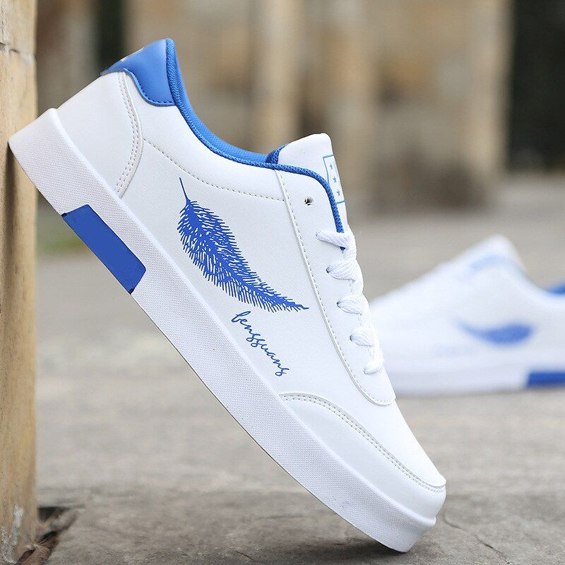
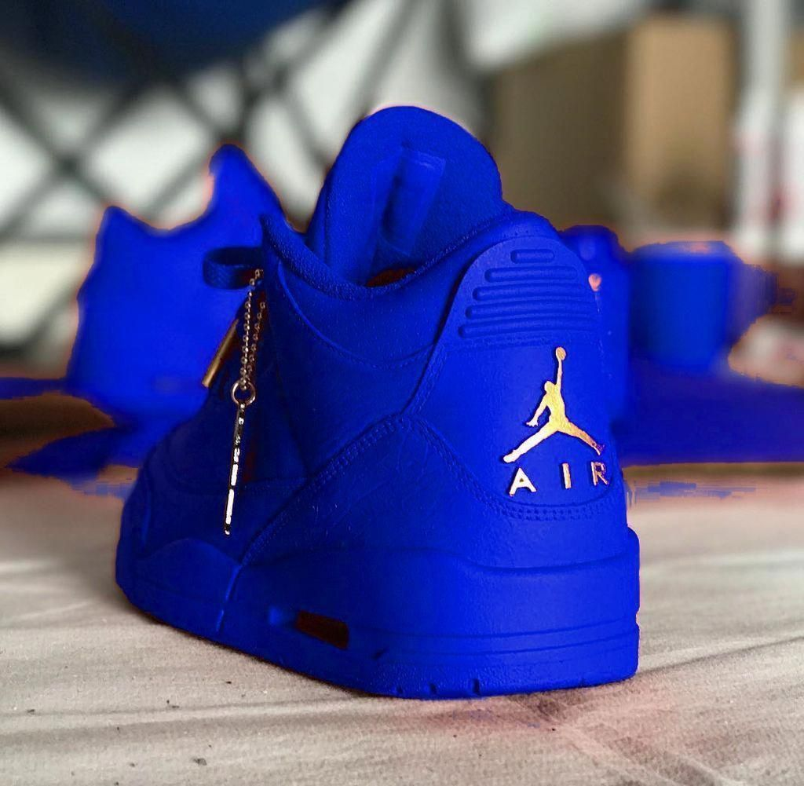
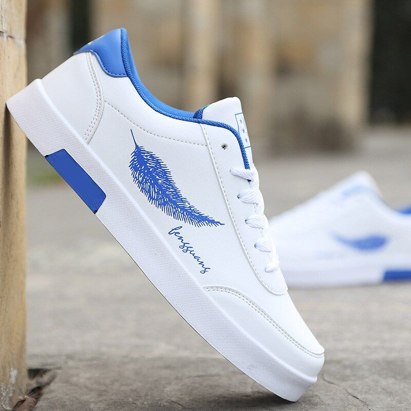
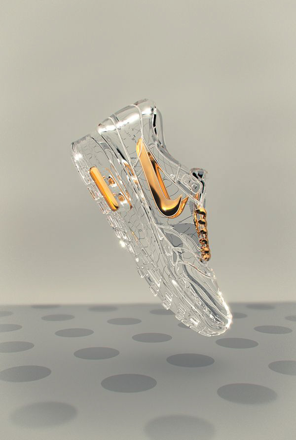

THREE-QUARTERS of the century ago the KWAYU shoe Co. set out minister everyone's vanity in the matter of footware . True , it cannot havebeen difficult art it is today.Today shoes,men's shoes particulary, are very much in evidence, and no footware could court and deserve more security than KWAYU SHOE.As a distinguishing mark every KWAYU shoe has stamped on the sole an impression of the outstanding architectural feature of KWAYU the magnificentcenturies -old Cathedral.The grace of the high tapering spire cannot fail to suggest the elegance and beauty of line branded with names KWAYU SHOE.
You want full value of your money and high standard of style,fit and services.The KWAYU mark of quality is assuarence that you are getting all you pay for. Consider the wear,not the price per pairLook for the quality mark "KWAYU".
SOLE FOR SOLES
KWAYU SHOE STORE
Talk the talk,Walk the walk on life
MADE BY KWAYU MMARI